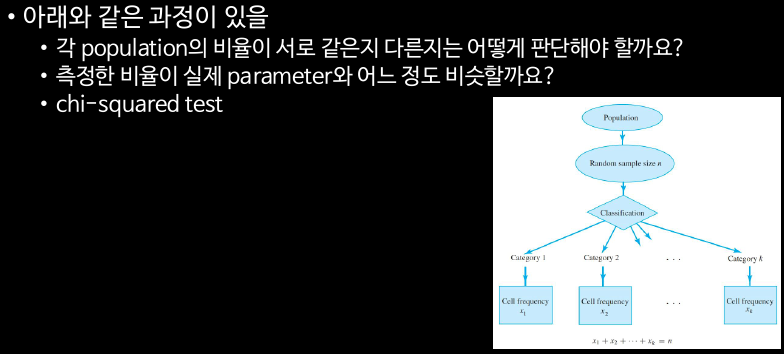
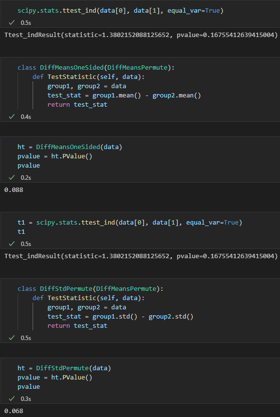

Probability and Statistics week 12
이번 시간 할 일

p-value
Ex: two-sided p-value calculation
One-sided t-test
Ex: one sided problem
Hypothesis testing process
z-test
two-sided problem
one-sided problem
Significance levels (통계적 유의성)
Type I error와 Type II error
Two-sided problems
Ex: 엔진오일
Two-sided interval과 p-value
One-sided problems
Comparing two population means

Ex: 코로나 치료제
Paired sample vs. independent sample
Analysis of paired samples
Ex: 신약의 실험
Analysis of independent samples
2가지의 방법
General procedure (Smith-Sattrthwaite test)
Two-sided problems
One-sided problems
Pooled variance procedure
Two-sided problems
One-sided problems
Inference on the population proportions

Chi-square test
Chi-square statistic
Ex: 기계고장
이번 시간에 한 일
다음 시간
Practice
